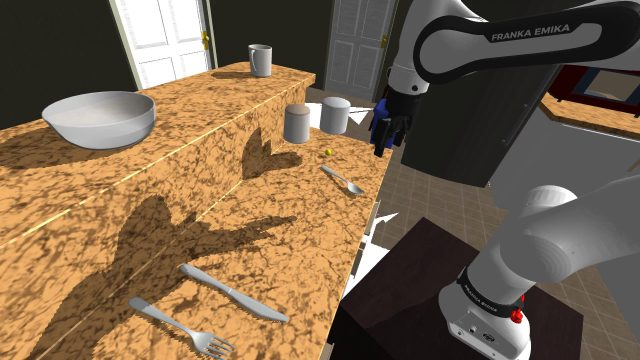
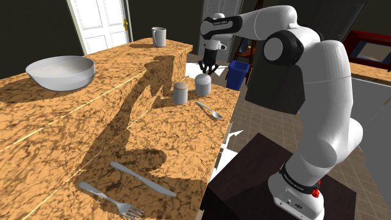
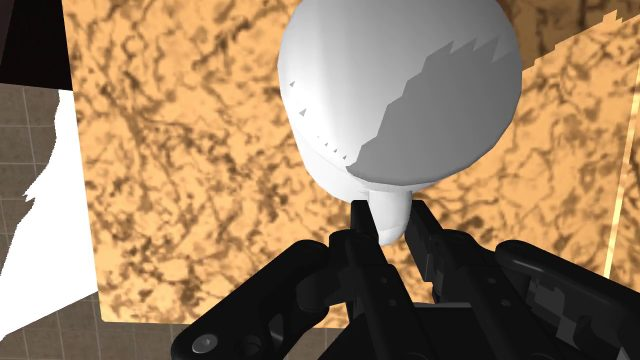
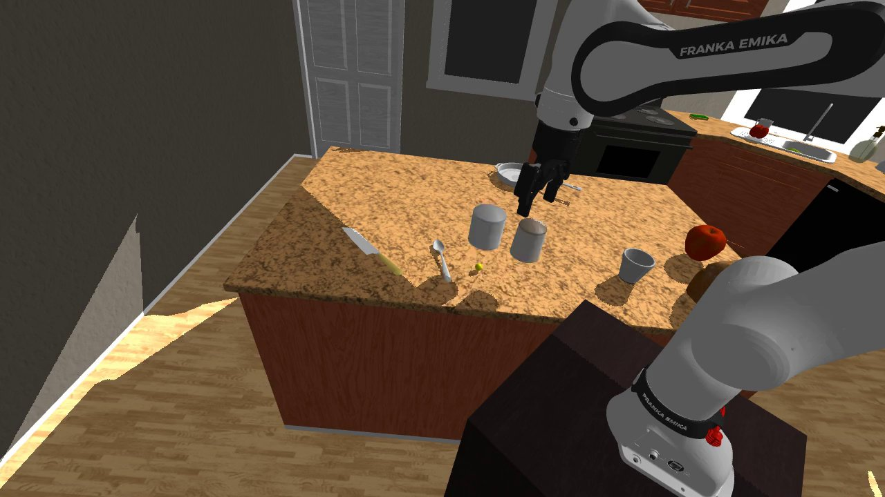
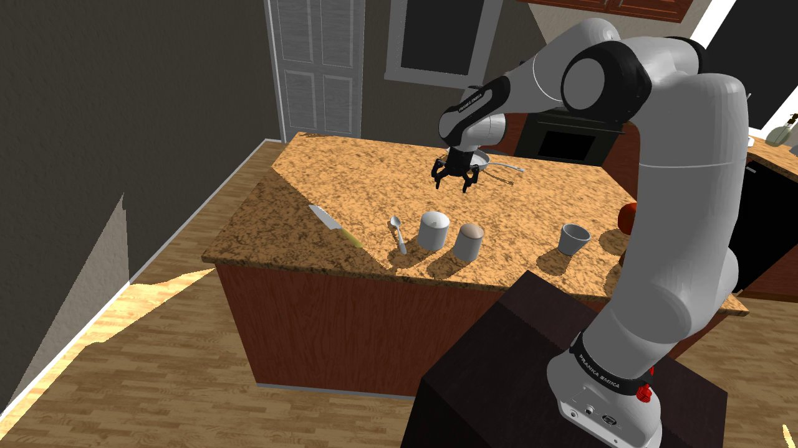
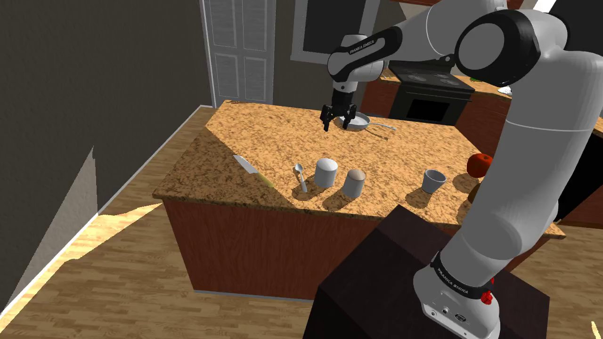

ボールが入っているマグを取る
MolmoSpaces CommonSense の MugBallPick。
逆さまのマグが 2 つあり、片方の下にボールがある。
「ボールが下にあるマグ」を取り上げる課題。
遠隔操作なし。DROID planner と π0.5 ゼロショット（pi05_droid_jointpos、pi05_base ではない）。p-ws-40、2026-11-09。
論文の 8 課題のうち 1 課題。Hugging Face の 13 TB は落としていない。
条件
| 課題 | MugBallPick（覆い / 物体の永続性） |
|---|---|
| 指示 | Pick up the mug with the ball under it. |
| 環境 | MolmoSpaces · iTHOR（Objaverse なし） |
| ロボット | DROID Franka FR3 + Robotiq |
| 操作 | oracle PickPlannerPolicy |
| 成功 | ボール付きマグを把持して持ち上げる |
| サーバー | p-ws-40 · GPU 6（physnorm 学習の GPU 4 / 7 は未使用） |
| アセット | オンデマンド約 13 GB。全データ 13 TB は未取得 |
結果
| 実行 | 家 | 成功 | ログ |
|---|---|---|---|
| Run 1 · seed 2 | 1 | 0 / 0 | リフト IK 失敗、把持後にスリップ |
| Run 2 · seed 7 | 5 | 2 / 2 | 配置エラーのあとリトライ成功 |
| Run 2 · seed 7 | 10 | 2 / 2 | 途中 1 本はリフト IK 失敗 |
| Run 2 · seed 7 | 15 | 0 / 0 | 配置サンプリング失敗 |
| Run 2 · seed 7 | 20 | 0 / 0 | 配置サンプリング失敗 |
| Run 2 · seed 7 | 25 | 0 / 0 | 配置サンプリング失敗 |
成功軌跡だけ保存しているので、成功率 100% は「残した軌跡のうち成功した割合」。 試行全体ではない。本実行は 333 秒。
動画（house 5 episode 0）
静止画



ほかの成功クリップ
失敗の中身
| 内容 | どこ | |
|---|---|---|
| IK | 高い iTHOR カウンター（マグ z ≈ 1.26 m）でリフト姿勢が解けない | 家 1 · 家 10 |
| 把持 | 持ち上げ中にマグが滑る（指間距離 0.00155 < 0.002） | 家 1 |
| 配置 | マグを置けない家がある | 家 15 · 20 · 25 |
π0.5 ゼロショット
公式 CommonSense のゼロショットは pi05_base ではない。
DROID の joint-position で finetune した公開 VLA pi05_droid_jointpos
（gs://openpi-assets/checkpoints/pi05_droid_jointpos、約 11.6 GiB）。
websocket サーバ port 8080、policy_dt_ms=66（約 15.15 Hz）、horizon 500。
| モデル | pi05_droid_jointpos（π0.5 · DROID joint pos） |
|---|---|
| 使っていない | pi05_base（LIBERO / ALOHA 用の汎用 π0.5。action space が違う） |
| 指示 | Pick up the mug with the ball under it. |
| 試行 | iTHOR houses 5, 6, 7, 8, 9, 10, 11, 12 · 各 1 episode |
| 成功 | 0 / 5 |
| サンプリング失敗 | houses 5, 7, 12（numpy 1.26 に下がったあと配置 RNG が planner 実行時とずれた） |
| 家 | 成功 | 内容 |
|---|---|---|
| 5 | 0 / 0 | ロボット配置失敗 |
| 10 | 0 / 1 | シンク側へリーチ。マグは触らない |
| 6 | 0 / 1 | 奥のフライパンへ寄る。逆さまマグはそのまま |
| 7 | 0 / 0 | 配置 / 可視性失敗 |
| 8 | 0 / 1 | horizon 満了 · 失敗 |
| 9 | 0 / 1 | horizon 満了 · 失敗 |
| 11 | 0 / 1 | horizon 満了 · 失敗 |
| 12 | 0 / 0 | ロボット配置失敗 |
各成功判定つき episode は 501 フレーム · 33 秒（500 × 66 ms）。成功率 0%。 planner が同じ課題で 4 / 4 成功した家でも、ゼロショットはマグを取り上げていない。
ゼロショット動画
ゼロショット静止画（house 6）



まだやっていないこと
| 状態 | |
|---|---|
| Pick Occlusion など残りの CommonSense 課題 | 未着手 |
| 公式 7000 JSON | 未公開 |